Horsemanship Pages
- *Home
- *Sitemap
- *SEARCH THE SITE
- *Horse History
- *Horseman Tips
- *Horsemanship
- *Amazing Horse Hoof
- *Horse Anatomy Pictures
- *Rope Halters
- My Random Horse Thoughts
- *Tying A Horse
- *Bosal/Hackamores
- *Bad Horsemanship
- *Misc Horse Info
- *Trailer Loading
- *Training Videos
- *Hobbles
- *Horse Articles
- *Health and Medical Info
- Horse & Rider Fear
- Opposition Reflex
- *Answers to Questions
- *Cowboy Wisdom
- *Cookie Recipe for Horses
- *Horse Jokes
- *Cowboy Weather
- *Sites and Links
- *A Horse's Prayer*
- *Photos Rick and Horses
- *Clinics on Request*
- *Contact Rick
Riding Bitless, Bosals & Hackamores
Rick Gore Horsemanship

Horses love it when their owners understand them.
Horsemanship is about the horse teaching you about yourself.
Riding Bitless
Bosals and Hackamores:
I Don't Ride Any Horse in a Bit
A bit is designed for one thing "PAIN", I don't care how people try to justify it, people that use a bit are hurting their horse and are not true horsemen. Fear and lack of understanding of the horse is why most people think they need a bit. Bits are big business, tricks gimmicks, special this and special that all things to confuse people that bits control horses when in fact bits do and are designed to do one thing - CREATE PAIN COMPLIANCE - pain = fear = flight or fight.
It comes down to confidence in you and your horse, if you are scared, if you don't trust yourself or your horse, you will mistakenly think that a bit will help you - It won't, it will only increase the pain and confusing in the horse and will stop communication. No one hears much when they are in pain and being hurt.
Stop being fooled, stop being played, stop listening to others that don't know any better. I have a standing offer, any horse that can be ridden with a bit, I will ride in a rope halter in under an hour. Send my 1000 bucks and a round trip ticket, if I can't do it, it won't cost you a thing - the problem is no will put their money where their mouth is - most are too scared to be proven wrong since it might mean they no longer have an excuse to use a bit. Every horse I have done this with, the owners normally come back with well this horse much like you or you are a horse whisperer and I am not, the excuses will always justify their fear to continue using a bit. Other excuses I hear is my sport won't allow bitless or my breed of horse does not do well without a bit. Here is a picture that proves that excuse wrong.

Below is example of a so called expert rider with a well trained and well bred horse - really? How can anyone not see the pain and confusion in this horse's eyes. As I say a lot - There are none so blind as those that do not want to see.

Below is a picture of a woman's horse that she LOVED, and said it was being stubborn and would giving her trouble taking the bit - "NO SHIT" - this is what the Vet found when she looked, the bit was being yanked and pulled so much and so hard that it was cutting horses tongue off - yet every person that rides a snaffle bit wants to say bits don't hurt horses. The ignorance of people who are scared never stops amazing me. Once again, bits are designed and used for ONE thing- Pain Compliance.

If horses never lie, then surely this is proof that Bits DO NOT control horses.
If she can do it - what is your excuse?

The below picture makes it very clear. The brown horse with NO BIT has his head where it needs to be is balanced, level and NOT in pain. Conversely the White(Gray) horse, is OFF balance, in PAIN, the rider is pulling the horse back hurting his teeth and gums. Yet many bit lovers will still defend cruel, archaic metal pain devices called bits.

Here is the Conclusions of a Study Done On Bits Verses Bitless:
Conclusions
Horses wearing the bitted bridle exhibited more chewing, opening of the mouth, pawing the ground, and tail swishing than those in the bitless bridle. The horses wearing the bitless bridle exhibited more head lowering during long reining compared to those in the bitted bridle. The frequency of chewing, opening the mouth, and head raising decreased as training progressed. During long reining, the number of steps taken after the application of the halt stimulus was greater for the horses in the bitted bridle compared with those in the bitless bridle. During long reining, the heart rate and heart rate variability were higher for horses in a bitted bridle compared with those in a bitless bridle. If the use of bitted bridles does cause discomfort to horses, as suggested by some, then the use of bitless bridles could be beneficial and certainly warrants further investigation. In the interest of the welfare of horses in training, there is a need to conduct further work in this area, using larger numbers of horses, to determine conclusively the benefits of using bitless bridles in preference to bitted bridles.
You can read the entire study here Bitless Research PDF
Here is a 83 year old Woman riding a Mustang bareback with NO BIT. She sent me this photo thanking me for convincing her to get rid of the bit. Great Spirit and attitude to change and learn something new at 83.
Here is a copy of an article without pictures of a discussion about Bits. You can click on the title to take you to the link of the entire article.
( Irrefutable Truth #2 )
"They have never learned that the bit is for communication, NOT CONTROL! When we try to rely on the bit for control instead of communication, our approach to training and problem solving becomes a matter of trying to contain a wreck."
Steve Jonkheere "Steve's Intelligent Horsemanship Principles"
I wanted to write this article for sometime but kept putting it off because I was concerned that it A) I would not do the topic adequate justice. B) that it might take volumes to really cover the topic of bits.
So, instead, I have decided to keep it as basic as possible and use generalities instead of too much detail. Yes, there are always exceptions to every rule but for the somewhat limited space I have available, I will only concern myself with generalities. The rest, well, that's up to you to discover and find during your horsemanship journey.
The subject of bits, and their use, has been a topic of debates among horsemen and horsewomen for decades equal only to debates concerning Creationism vs. Evolution and the ever unpopular 1st Amendment vs. Separation of Church and State and yes, while I am being silly, to most horse owners, the debate on bits is a very serious matter.
People incorrectly assume that I am against bits not at all. Not even close. What I AM against is the uneducated way we think about bits the uneducated way we use bits and the uneducated hands that pull, jerk and manipulate bits in a horse's mouth. Now THAT is what I am against.
Now here is where I am about to get flamed and chided for my opinions first almost everyone agrees that in training, horses do not need bigger bits the bigger bit theory comes from those who are either looking for a quick fix to a problem which usually stems from a serious hole in a horse's training way back down the line or the bigger bit is used to compensate for the uneducated hands operating the reins or lack of good horsemanship skills.
If you find that you are needing to go into a bigger bit of any kind, or a severe mechanical hackamore. then you need to re-evaluate yourself and your horse's foundational training. There is a serious hole in the training - either yours or your horse's. Period.
Even Dale, Ron and Bob Myler, makers of Myler bits, state this truth in their book "A Whole Bit Better". In fact, they even go on to say that if your horse is resisting the bit you don't move up into a more severe bit, but rather move back down into a smoother snaffle and begin re-training.
Wait a minute. Softer? With resistance? Yes, go exactly the opposite as you might have learned. Take the horse as soft as he will allow. When the horse is resisting the current bit, it's too much bit for him and he can't relax. Your communication to him is not being properly received. Go to a softer bit so he doesn't resist, can relax and accept what you are communicating. It is important to remember, however, that the bit is only a tool. A bit will not train your horse. Proper training takes time, patience, and repetition. And you need to have the correct tools to communicate what you are asking the horse to do - hands, legs, seat, voice and proper equipment."
Dale, Ron, and Bob Myler "A Whole Bit Better"
Even this very mild Myler Comfort Snaffle can be a torture device in the wrong hands and with the wrong idea of how it works.
Okay, so we understand that in the early stages of training we need re-training and not a bigger bit in fact, to borrow a 'Parelli-ism' here "bigger brain vs. bigger bit".
But then the horse's get so smart that we need a bigger bit so the traditional rule of thumb is to go up into a curb bit and according to the experts, your horse apparently gets so smart that he has to go up into even a bigger bit such as a Santa Barbara Spade bit for ultimate refinement and if he isn't into this bit, then he isn't refined or 'finished'. HORSE BISCUITS!
I DON'T SUBSCRIBE TO THAT SCHOOL OF THOUGHT!
I guess all the upper level dressage horses being ridden in D-ring snaffles aren't "finished" horses ? I guess all the fancy maneuvers, the pirouettes, piaffes and the passage are all elementary school movements and these horses still have a long way to go in their training ? These finely trained horses are most certainly "finished" horses.
Most recently, the idea of a horse not being "finished" unless they are in a full spade bit style bridle comes from those who train in the Vaquero tradition. Don't get me wrong, the Vaquero tradition and it's philosophy and principles produce some of the finest horses, but it is most certainly not the last word on training horses. In fact, lately there seems to be a shift toward any form of 'natural training' stemming from those who advocate the Vaquero tradition. Don't believe me? Take a look at the horse industry magazines and you see it's influence throughout all the pictures and articles.
Look, the Vaquero way, the way I see it, is not the final word on horsemanship or training. It is a discipline. Much like saying English is a discipline or Western is a discipline.
Tell me, what does a Santa Barbara spade bit, romel reins, bosalito with horsehair mecate, chinks, expensive Garcia spurs, and flat crowned Spanish Cordoba styled hat have to do with English riding? Absolutely nothing. So I guess all those millions of people riding and training English style all over the world are wasting their time because their horses will never be a high caliber finished horse, right? NOT!!!
But there are those who jump up to defend the Vaquero way and say that it isn't the tack, but rather the principles and concepts involved in that disciple which will make fine horses. EXACTLY !!!!! So a horse, any horse, can be "finished" and not have to be ridden in a giant heavy silver inlaid Santa Barbara spade bit.
The other problem that I find with this seriously flawed thinking comes from clinicians themselves. That's right, WE are to blame for the problems that are arising out of uneducated people putting college level bits into their elementary school level horses and compounding bitting problems.
In the last 10 years, we have seen great horsemen and horsewomen produce tape series which teach someone how they can, in the privacy of their own home, gentle and start a 2 or 3 year old under saddle and some even spout off it can be done in an hour or less. What we are encouraging here is for somewhat green riders to buy young green horses and start the horses themselves and immediately after the snaffle bit, they put a 5 inch shank curb bit in the horse's mouth for "control" and stopping power. I have seen these bits in the mouths of horses who were barely over 2 years old !!!! Again, that's like trying to communicate in high school English Lit level conversation to a horse who is still learning about "See spot run. Run spot, run". And what does the Vaquero tradition teach after that? Well, you did fine now, so if you really plan on "finishing your horse" you need to put him up into a Santa Barbara Spade bit.
BUT WAIT - Has anyone even bothered to take the time to teach these home grown Vaquero video aficionados on how to use their hands so that they can communicate through that loud bit and it be only a whisper?! 99% of the time, they have not. So the backyard homeowner buys a clinician's tape series and then proceeds to buy a very college level bit and puts it in their young horse's mouth but their own hands may still be 1st or 2nd grade level. What do you think is happening in that horse's mouth?!!! What type of communication do you think we are having with our horse's at that moment?!!! Those reins connected to those spade bits need to be trained .if you are going to use a college level bit, you need college level hands!!! Nothing else will suffice. Period.
Also, the Vaqueros didn't finish a horse in one year or even two years horses weren't considered full bridle horses - finished horses - until they were 6 or 7 years old not 2 or 3 years old !
"Most people believe that you should start a horse with a really quiet bit, so-to-speak. Then the further along in the horse's training you go, the bigger the bit you should automatically put in his mouth because it takes a bigger bit for him to understand more. People think that there's a direct relationship between what a horse knows and what kind of bit is in his mouth. What actually happens is that the horse gets used to the bigger and bigger bits. Eventually, you need the bigger bit because the horse is used to the beating he gets with it every day. Horses are so sensitive that they can feel a fly land on their skin. They can feel and understand a mild bit if the rider knows how to use it. But you can't train in shouts and show in whispers. When you put a bit in the horse's mouth that multiplies your pressures you lose your corridor of aids."
Ron Meredith "Loud Bits Destroy Communication" online article www.meredithmanor.com
One last thing again, blaming the current Vaquero fad for a lot of the misconceptions that we hold as the 'norm' in today's horse world, the Spanish word for bit is "Freno" which translates to the English word "Brakes" So even within the Vaquero tradition there lies misinformation. If they teach that bits do not control horses and that it is a communication tool, why then do they use a word that literally translates into "brakes" ? In other words, "brakes" stop horses brakes control horses. Confusing isn't it?
And again, Don't take my word for it I would never post anything that you can't go check out for yourself go to any online free translation website and type in the word "freno" or the word "brakes" and you will get the other word in translation. So let's change direction here a minute log on to almost any general horse training internet message board and you will find dozens of posts asking the same question.
"Which bit do I use?" "Help me get control of my horse!" "Help, I can't stop my horse!" "My horse runs through the bit!!" etc., etc these type of questions are endless.
Despite the fact that several competent, experienced and knowledgeable people offer the advice of beginning training again and dropping back down into a basic snaffle bit, the majority of responses still boil down to using a bigger more severe bit to get the horse to listen.
Why? Well the excuses are as plentiful as there are bits in a catalog
Because their trainer has good success with Tom Thumb bits or because their other horse acts just fine in a mechanical hackamore or the ever popular horses are individuals and some need to have a bigger bit to control them.
And some people ignorantly fall for such erroneous advice because they wont take the time to explore and discover the answers for themselves they just want the problem fixed without having to go through some real problem-solving sweat. And of course, the problem never stems from the bad hands why everyone on these internet boards have absolutely perfect hands because they have been riding for years and their grandpa taught them to ride and he was the best rider they had ever seen. Yadda, yaday, yadda Okay, okay, you get the picture.
The other reason why they search for the better controlling bit is that they tend to blame the horse. It seems that everyone on the internet has perfect hands by golly, they have all been riding since they were three and they know how to ride yep, they are all perfect in the communication of their aids so the fault must lay blame on the horse no, No, NO!!!
The simple truth of the matter is BITS DO NOT CONTROL HORSES !
If bits controlled horses and stopped horses we would never have stories of a horse "running through the bit". If bits controlled horses, we wouldn't have over 300 bits and custom parts for bits in one single catalog. We would have maybe 2 bits and that would be it but instead someone found a flaw in a particular bit and began modifying the bit until it became something else .and so on and so on. Look in the most recent National Roper Supply catalog and count how many bits, versions of bits and custom bit parts there are in the catalog. It will absolutely astound you!
Someone once asked me via email, if bits do not control horses then how do we get control over a horse and how far down the line do we need to go to re-train and eventually 'finish' a horse? Great questions! Control comes from controlling 5 very small, but VERY significant things
A) The horse's mind
B) The horse's four feet.
And these things are very closely connected and inter-mingled.
Okay, I can already see you guys rolling your eyes and letting out this long sigh I make no apologies here this is the truth no matter who says it and regardless of the individual horse.
Long before you can ever willingly move a horse physically, long before you can ever stop a horse physically, turn a horse, side pass a horse, jump a horse, etc long before any of those physical actions can be done, there must be a yielding of the horse's mind and once the horse yields to you mentally, the feet follow right along and when the feet follow along willingly, the body just naturally does what you want it to do. It is the same way an in uncontrollable situation as well. If the horse is scared the mind will cause the feet to act in a certain way .prance, spin, RUN!
On the trail, when a rider does not have the horse's mental and emotional components under control, what do you see? A horse that speeds up all the time, a horse that cant walk slow because the other horses are getting too far ahead, a horse that will jig and toss it's head, and a rider who is having to fight their horse the entire time. What a physically and emotionally draining experience. Instead of enjoying our horses and creating partnerships, these people spend their entire lives trail riding the same old horse in the same old way with the same old training using the same old tack but they expect different results. Now THAT'S insane!!!
"Bits are a mystery to most people. The most common misconception seems to be; the bigger the misbehavior, the bigger the bit you need to correct it. I, on the other hand, teach people why they really don't even need a bit to control their horses. In most cases it's a revelation for the person and a relief for the horse. Horses run off or bolt out of fear. Its starts in the mind, goes through the body and down the legs to the feet. Once the horse is this frightened the rider is essentially riding scared feet. Most of the time it doesn't matter what bit is being used in the horse's mouth he can't be stopped. I've seen horses with huge shank bits, martingales and nosebands stick their chins on their chests and go! When prey animals get that emotional, and they need to save their lives, they will run through anything, painful or not."
Pat Parelli "A BIT OF SAVVY: Where, When and Why To Use A Bit" online article www.parelli.com
"A bit doesn't mechanically slow a horse down. Horses must be taught what the use of the bit means and must have an incentive to respond to it's message. But novice riders generally don't understand this and think of the reins and bit as brakes, that somehow pulling on a bit mechanically affects a horse's speed." John Lyons "Communication Through Cues pt 2" page 121
Do tough horses really need tougher bits? Big bits are used when the common belief is that to get control of a horse, you have to over-power him. Having to use a bigger bits a sure sign you have little or no communication with your horse's mind." Pat Parelli "Level 1 Partnership Pack
Now I can hear a lot of you already saying, "Yeah, okay, I understand that I have to control the mind and emotions to be able to control the feet, but that takes time and I need to control this horse now. So what can I do?"
GET OFF OF THAT HORSE !!!
If you are in such a rush that you cannot spend the time it takes to develop that mental, emotional and physical connection with your horse - or any horse for that matter - then you have no business riding that horse!!! That applies to trainers and clinicians as well!!! Get off that horse because you are essentially riding a "train wreck waiting to happen". Look, if you think I am going to suggest some magical piece of tack that is going to solve the horse industry's problems or give you a 10 second cure all exercise, then you are mistaken and you really don't know what I am about and how strongly I feel about my philosophy of horsemanship. First, it wont do the horse justice second, it will most probably endanger you and get you hurt third, I just don't work like that.
So how far back down the line do we have to go to get control of the horse's mind and feet? Well, all the way back to square one if need be. It doesn't matter if the horse is weanling or if the horse is a 20 year old senior. To gain control of the horse we have to go back to the place where we lost control to begin with at the beginning.
Remember, just like a horse's body needs training for a particular task, so does his mind and emotions. We control the body by controlling the feet and we control the feet by controlling the mind and emotions. Too often I see people trying to hold back a 1000 pound horse by pulling back with all their might and yet the horse continues to buck, or run off. They are still trying to control the physical component of the horse. Part of the reason is that they don't understand where their hole is in the horse's training (and the rider's as well). They also see the reins as something connected to the face. When I am riding a horse in a clinic, any horse, rarely do I use a bit regardless of whose horse it is. When I trail ride I never use a bit. Usually we will run into other riders along the trail and inevitably someone will ask why I am riding without a bit and how do I go about stopping my horse or turn his nose in the direction that I want to go. Again, they still believe that reins and bits control horses.
Let me take a moment and explain something here. Even when you use a bit any bit the reins ARE NOT connected to the face the reins are "attached" to the horse's face, but they are "connected" to the horse's feet. All four feet to be exact. But this is a difficult concept for some people to understand.
Instead of thinking horizontally, that the reins are connected from your hands straight out horizontally and connected to the face begin to think VERTICALLY that the reins are actually connected from your hands straight down to the horse's feet like a puppet master working a marionette. How's that for visualization? Does that paint a picture of what I am trying to convey?
Ray Hunt did a wonderful job of demonstrating this concept during the Tom Dorrance Benefit in Fort Worth He was speaking on horsemanship and was riding this mare who was getting a little busy with her feet. He not only thoroughly explained the concept but proved it as well for all to see. What a great way to see this first hand to watch the master, himself, teach this concept.
Let's get back to the main point of this article So control begins with mental and emotional control so how do we achieve that? How do we get it? Well to give you a step-by-step method would take volumes for me to detail out here but let's start with this being uncontrollable is a problem and all problems fall into one of, or a combination of, four categories these are:
SELF PRESERVATION
Trust - Respect - Communication
Notice that I put Self Preservation above all else and in bold block letters. That is because nature put it above all else in the horse's DNA. There is nothing that we can do to change that fact. When a horse becomes confused, frightened, excited, threatened, etc., he automatically switches from being left brained to right brained and Self Preservation kicks in. The need for fight or flight comes from his right brain. Logic goes right out the window when the switching of brain sides occurs. This is who he is as a prey animal and his very existence relies on Self Preservation being the number one thing in his life.
The first responsibility that falls on the human is Trust. It is the essential building block that all horse/human relationships, and partnerships, are built upon. Before anything else, a horse must first have to trust you to truly give of himself and ignore his instinctual Self Preservation .
The second responsibility that a human has to shoulder is earning Respect. Now there are a lot of similarities between Trust and Respect when dealing with a horse. The two almost have to go hand in hand. If you stop and think about it, you really can't have Trust without having Respect . They each are byproducts of one another. First a horse has to learn to Trust you. You earn the Trust by teaching him that, as his leader, you will not lead him into harm nor abuse him. His best care is in your hands. With this, he learns to Respect you. The more he Respects you, the more he will Trust you and the more he Trusts you, the more he will Respect you. It takes TIME (training principle #1) to earn and create a relationship built on Trust and Respect however. it literally only takes about 2 seconds to completely destroy the Trust and Respect and thereby destroying the relationship.
The last responsibility that humans must shoulder is Communication . I find that in most cases, problems occur when there is a break down in Communication between horse and human. I will tell you in plain English right now that when it comes to miscommunication it is always the human's fault. We tend to be rather ego-centric and almost demand that every being understand our spoken language, intent, body language, thoughts, emotions, etc. Somehow we expect all to conform to human way of understanding. But horses don't think like we do. It is we humans who need to change our thought processes in order to better Communicate with horses.
I have people tell me that their horses are tossing their heads, or being cinchy when they have always acted normal during saddling. They will explain how their horses are now playing hard to catch in the pasture and are constantly wringing their tails and pinning their ears. They immediately revert to using force or mechanical devices to correct problem. Again, they are attempting to stop the symptoms instead of curing the cause. All these little signals that the horse is giving us are signals. It is his way of talking. This is what his language is based on and we just sit back and simply ignore the conversations. Or we want to ask our horse to slow down so we pull back on both reins. Then later we want a transition of gait or leads and we pull back with both reins. When we want the horse to back, we pull back with both reins. If we feel we are losing our balance we tend to pull back with both reins and use them to balance ourselves. Through all of this we expect the horse to understand our intent yet the signal that we are giving them is exactly the same and very confusing. Once again, it is the human at fault in the miscommunication.
So what we would like to do is invert that formula to look more like this:
TRUST - RESPECT - COMMUNICATION
Self Preservation
Once we can invert the formula so that the horse's need for Self Preservation is reduced, we then can begin establishing a partnership in which the horse will look to us as their leader and this will give us control long before we ever put a bit in that horse's mouth.
In fact, in my Less IS More Philosophy, all early training should be done without a bit ..in other words, I try to achieve vertical flexion, lateral flexion, backing, walk, trot, canter, stopping, side-passing, disengaging hindquarters, moving the forehand, lowering the head, etc ..all in a halter long before bitting a horse. Why? To preserve the horse's mouth and to preserve the horse's "try".
Once we achieve these tasks and the horse is light and supple, then it is just a matter of adding the snaffle bit and REFINING the communication and REFINING my other aids.
See, as I alluded to before ..control of a thousand pound animal comes from riding and controlling the mind and feet. I know that for some of you that is a hard concept to grasp. Why? Because you have always been taught to physically control a horse through physical means. This has been ingrained into your thinking whether you realize it or not. And it's probably not even your fault that you think this way. In your mind, the bigger bit theory is the accepted norm. Well, no longer. It's time to start doing some research and start raising your own level of horsemanship up to meet your horse's needs. Have you ever seen, either in person or on video, some of Pat and Linda Parelli's students? Now I am not advocating their program here I am just pointing out that if you had seen their students, you would see riders going about walking, trotting, cantering, jumping and just all around playing with their horses and doing it all bareback and in a rope halter or bareback and bridle-less!!! Those horses turn when they are supposed to turn, stop when they are asked to stop and back up when they are asked to back up.
What you won't see are leverage bits or mechanical hackamores of any kind on any horse. WHY?!!! Forget the hype, forget what you hear and what you may, or may not, like about Pat and his program .have you ever asked yourself how do these riders maintain control of their horses? They are all just playing around having fun in absolute control. Take a look at the horses you wont see pinned ears, stressed bodies, wide eyes or wringing tails .even the horses look like they are having fun!!!
They have achieved this by inverting the formula so that there is trust before respect and that trust and respect comes through great communication .and the investment of TIME (the number one training principle and tool in horsemanship). Look at pictures of our Grandaughter Janessa .you can see pics of her at age 3, 4 and now at age 5 and see her riding her horse bareback and in a halter.
Trust. Respect. Communication.
Again, forget the hype and forget the egos and just look at the horses and the mental and emotional control (that's all that matters anyway)
Horses don't lie, my friends .in fact, horses never lie So whether you have a horse that runs through the bit and cannot be stopped, or you have a horse that you can ride bareback and bridle-less they are living proof that
BITS DO NOT CONTROL HORSES!!!
Care and Cleaning of Bosal and Rawhide
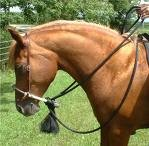I will talk about and discuss Bosals.
Bosals and Hackamores were originally used to start colts in training. Since untrained colts make many mistakes, a hackamore does not injure sensitive tissue in the colt's mouth and provides firm and safe control. The term Hackamore and Bosal are interchangeable, however, technically the Bosal is only the rawhide braid around the nose of the horse. The hanger and reins together with the Bosal completes the Hackamore.
Parts of a Hackamore :Hackamore came from Spanish culture and was derived from the Spanish word jaquima (hak-kee-mah). The parts of the Hackamore are:
Bosal (boz-al):This is the part around the horse's nose usually made of braided rawhide, but it can be made of leather, horsehair or rope. The size 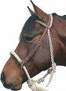and thickness of the bosal can vary from pencil size (thin) to 5/8 size (thick). The Bosal can vary in length and stiffness. A mutation of the bosal can have a cable or steel core. Traditionally, the core should be rawhide to make it pliable and fit closely to the horse's nose. Parts of the bosal are the nose button and cheek buttons, cheeks or shanks, and the heel knot. I like soft bosals, but when schooling a young horse, who may have more resistance, I use a stiffer and thicker one. I never use a cable or steel core bosal. They are heavy, do not give, will hurt the horse and will ruin any softness you are trying to achieve.
Mecate (meh-kah-teh): Mecate is a continuous rope, traditionally horsehair, that is wrapped around the cheeks of the bosal in a manner to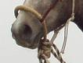 provide loop reins and a lead line. Other types of ropes are frequently substituted for the mecate but are used in the same manner. I like using Yacht rope that is used on sail boats. This rope is soft and is designed to be around salt water. Since a horse sweats salt, this will not damage or weaken the rope. Cotton is another good rope that is affordable, soft and works well. (You may hear a Mecate called a Macarty. This is a mutation by Americans of the word Mecate)
Fiador (fee-ah-door): A fiador is a rope throat latch that usually consists of a doubled rope that is passed around the neck just behind the ears and is attached to the bosal at the heel knot. It helps keep the bosal at right angles to the face of the horse. A variation of the fiador is the rope halter, also known as a natural halter.
Reins: When a Mecate is not used any reins can be used on a bosal. The problem will be securing them to the bosal. You can attach them the same way you do the Mecate.
Hanger/Headstall/brow band: These complete the hackamore and is usually made of leather, but small ropes or cords are also used. The headstall should be adjusted to raise or lower the bosal on the horse's nose. Brow bands are added to prevent the headstall from slipping back on the neck. A hanger is more of one piece of leather that runs from the Bosal to around the back of the horse's ears.
Fitting and adjusting a hackamore:A hackamore must be properly adjusted to achieve the best results. It is placed low on the nose, near the soft cartilage, but not below it. Low placement assures maximum leverage and encourages flexion. The bosal should be short enough to make both nose and chin contact without sliding up the nose. To put more pressure on the nose than on the chin, adjust the bosal to allow a slight lift of the heel knot before the cheeks touch the horse's chin. If more contact on the chin is desired, the cheeks of the bosal should be precisely adjusted to make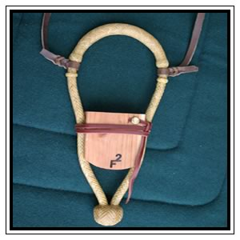 simultaneous contact with the chin and nose. Fitting is the most argued point about a bosal. Some like it higher and some like it lower. Lower will give more leverage and higher will give less movement. We are only talking about two inches or less of play. As long as it is not hurting or uncomfortable to the horse, it makes little difference. You can help make a bosal fit better by using a bosal shaper. The photo to the right shows how to shape it so it will fit better around the horse's nose. I have another link on my horseman tips page to a great site with good gear who sells a bosal block.
Making these adjustments will necessitate selecting a bosal length appropriate for a particular horse's nose. Sometimes finding the exact length needed is difficult. Bosals that are too short cannot be used, but those too long may be shortened by binding the cheeks tighter together with the mecate. Some Horsemen prefer to use bosals made from manila lariat rope (too rough for me). I like soft rawhide because - if I was a horse that is what I would want on me.
Braided Rawhide Bosal Care and Cleaning:
Most good Bosals are rawhide and require minimal cleaning if cared for properly. Do not use oils on rawhide, conditioning cream works best. Two things that will damage rawhide are water and heat. Both will dry it out or rot it and will remove conditioning.
If a bosal gets very wet, it will need to be dried to minimize this damage. The best way is to hang it from the heel knot not in direct sunlight.
Reins should be removed and allowed to dry in a straight manner. Don't hang rope/reins from metal that can rust or stain your gear. Wood, plastic or using a string to hand from metal are alternatives.
When the bosal is dry, look at the edges of the rawhide strings to if they look fuzzy or feel rough. If they do, then they need conditioning. Ray Holes Vaquero Rawhide Cream seems to work best and gives good results. Rub and massage the bosal (or other rawhide) with the cream. As you rub in the conditioner, you may see it turn brown or dirty. If you want you can use a cloth, wipe away all the dirty cream, and then re-apply clean conditioner. Work in any excess conditioner with your hands, fingers and then use a clean cloth to remove any that can't be worked it. Then hang the bosal for drying, NOT in direct sunlight.
You can use a block to shape a bosal or you can allow them to shape themselves by hanging them from the heel knot over a can nailed to the wall or a small piece of round fence post (about 3 inch in diameter) are two possibilities. When you finish riding, just hang your bosal upside down on the can, block or fence post to keep it open and ready for the next ride.
For Light Cleaning of the Bosal:
If you just want to clean your bosal you can use cool, clean water, a soft tooth brush, a towel and some Murphy's Oil Soap Paste or Fiebing's White Saddle Soap. The Murphy's paste is the better if you don't mind the slight yellow color. If you don't want to change the color of the rawhide, then choose the white saddle soap.
Rub the bosal with some of the Murphy's paste or white saddle soap and then dampen the tooth brush and use it to brush the braiding. Wipe off the dirt and suds with a cloth or towel. Never spray or wet rawhide with water. You want to use minimum water and try and keep it as dry as possible doing cleaning. Remove excess water and soap suds as soon as possible. Let it dry. If it looks like it needs conditioning, you can just rub it down well with the Murphy's paste or white saddle soap since that works as a light conditioner. Buff off excess conditioner with a soft cloth or towel. If it needs a deeper conditioning treatment, use the Vaquero Rawhide Cream as I described above.
I have attached three links on where you can order the Vaquero Rawhide Cream below:
The severity of the bosal is important and lies in the hands of the rider. Severe contact can cause the horse to overreact to pressures. It is difficult to show the horse what you want if it distracted by pain. Too soft of contact can result in the horse disregarding completely what the rider is trying to show it. Hardness and rigidity of the bosal are a couple of prime factors affecting severity. Braided rawhide bosals that are large in diameter and have rigid cores can be severe. For extreme softness, bosals may be made from soft cotton rope. The severity of bosals may be varied by adding or removing certain cushioning materials from the cheeks and nose button. Many materials are satisfactory for this purpose; the most commonly used is sheepskin. Soft Hands is the key to any training.
Weight at the heel knot of the bosal should be sufficient to cause instant release of chin pressure when the rider quits pulling and the horse puts his head in a neutral position. When the fiador is used, it must be loose enough to allow this release of chin pressure and tight enough to prevent the bosal from slipping off the nose. A fiador also helps the bosal to balance when the head is neutral. Use of a hackamore is based on the simple principle that the horse learns to respond to pressures on its nose and under its chin.
Tying A Mecate:
Tying a Mecate onto the bosal is simple once you do it a few times. I have attached some pictures that demonstrate this so it may be easies. In the pictures the bosal is hanging as if it was on a horse, so the tassle is hanging toward the ground. In the forth picture is where you are making your reins, you can make them as long or as short as you like by just adjusting how much rope you pull in step four. So the loop in step four is going up and over your horses head. The last picture is securing the rope and making your lead rope with the end of the Mecate. Notice the last loop sends the end of the rope the same way as the start tassel and opposite as the reins. You should be able to copy and blow up these pictures for more detail.
To watch a video Click Here to see how to tie a Mecate Rein to a Bosal by Rick Gore. You can also click any of the pictures below to view my video on tying and connecting reins to a bosal.
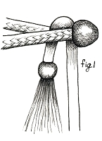
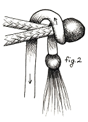
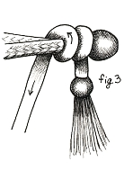
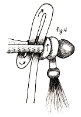
NOTE: Do NOT cut rope, in the photos it looks like the rope is cut, that is just to show loop part, a Mecate Rein is one solid rope.
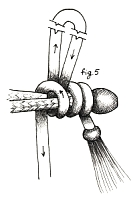
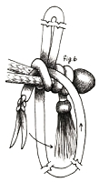
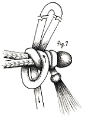
Mecate Reins Wrap for Leading
The photo below shows how to wrap your mecate reins around the horse's neck and use the lead rope without pulling the bosal off the horse's nose. If you do not wrap this way and try to lead your horse, you will pull the bosal off the horse's nose and your horse will be loose.
Biggest Mistakes When Using a Hackamore:
Hard or rough hands. If you pulling and fighting with the horse you have not prepared him correctly. A horse has to respect you and the bosal. If you have done your ground work properly, your horse will trust you and will accept the bosal without much resistance. If you throw it on the horse and start trying to force the horse, he will associate the bosal with pain and will never accept it. Riding with a bosal, NO BIT, is a purer form of horsemanship. People that use bits, any bits, are cheating themselves and the horse. Using a bit is easier and will cover up what you lack in understanding the horse. You can force and use pain to get a horse to do most anything. To get a horse to respond with ease and to ride as partnership is a dance that both you and the horse enjoy. I believe the absolute key to handling reins is minimal movement. Reins are not used for balance, security or forcing head movement. They are an extension of the soft touch of your hand. Move them less, move them soft and only move them if you want the horse to do something. For The Record I prefer riding in a rope halter over anything else. Many do not trust or have confidence to ride in a rope halter, so they like the bosal better, they think, they ARE wrong, that a bosal gives more control than a rope halter and a bit gives more control than a bosal and bigger harsher bit give the best control. This all so wrong on so many levels, but there are none so blind as those that do not want to see.
Starting to Use the Bosal
Bosal Training
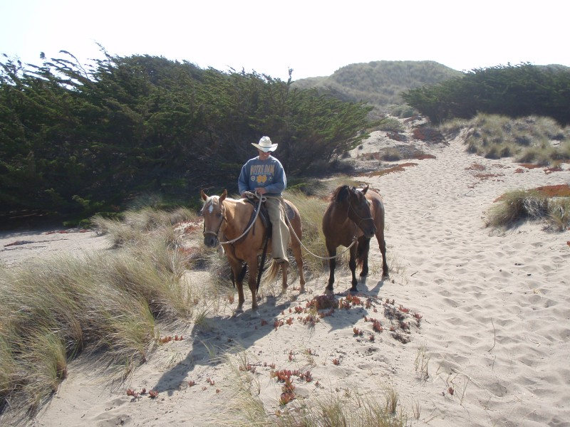
The hackamore is the oldest form of horse control. It works on pressure points on the horse's nose, chin and face. Possibly the truest form of hackamore is the bosal, simply a braided rawhide device that goes around the nose, ending in a heel knot under the chin. The word "hackamore" is thrown around quite a bit in the horse world today, and for good reason. It has been and still is considered by some, the ultimate training system for the horse, but it is also an art form, because not just any rider can use it. The rider has to understand the horse and communicate with the horse, unlike a bit where the rider can hurt and cause pain to make the horse respond.
If you to see why a bit is bad watch How Bits Create Pain to a Horse
The bosal should hang balanced, so the horse can feel the slightest touch or movement. You never pull hard on the reins of a hackamore or your horse will learn to run away from the pressure and you'll have undone all your hackamore training. There is a term called "doubling" that teaches a horse to respect the bosal. Most horses don't need this if they are properly started.
Many endurance and pleasure riders are using rope halter hackamores, which have knots placed over the nose to contact the sensitive spots on the horse's face.
Another alternative to the bit is the side-pull hackamore or halter, which is a rope and leather nose band that has rings for reins on both sides. This is a useful tool for starting colts, because it is easy to turn their heads left or right and to teach the horse how to give to pressure and learn direct reining.
Direct reining (plow reins) is when the head comes to the side you are pulling on. In a hackamore and a bit, when you pull the left rein, the horse feels pressure on his right side and moves away from the pressure to the left. A bit makes it easy to cheat and pull the head verses suggesting and letting the horse move away from pressure. Most people don't even realize that a snaffle bit pulls on the opposite side of the horses face.
Indirect reining (neck reins) is when the horse has advanced to moving away from the rein pressure when it is laid against his neck. Many people say or think their horse is neck reined, but they are actually still pulling the horses head. A true neck reined horse will work on loose and slack reins. The reins will never be tight, even on a stop. A good neck reined horse will be advanced enough to know leg pressure and body position. If you want to test and see if your horse is neck reined, ride it without a bit, bosal or headstall (bridleless riding). Put a rope or string around his neck and ride the horse with only that rope. A true neck reined horse will do just fine. Of course, the rider has to know how to give clear signals with their body and legs. (Pat Parelli calls this a savvy sting)
Both the bosal and side-pull are good for new riders or for horses that have been soured to a bit. You still need to ride any horse with a light touch. When steering, start with your hands wide and don't be rough. Move both hands to turn, getting both neck and direct rein. I like to move my hand so the horse can easily see it. Seeing my hand go out is an additional cue for the horse. So when I turn left, I move my left hand out so my horse can see, I give slight pull with my left hand and I lay my right hand and rein over the neck, also to the left, I push with my right leg and move my left leg away from the horse. While doing this I look to the left (where I want to go) which cocks my hips to left. All of this sends a clear signal that I want to go left. As my horse progresses, I slowly do less and soon, my horse will turn left with just a little leg pressure and moving my hand an inch or two in the direction I want to go. When training in a hackamore you will always use both hands and have one rein in each hand. After the horse is trained you can use one hand and neck reining.
I see people talking on the phone, smoking a cigarette or talking to someone else, while holding their reins in one hand, looking in the opposite direction they want to go, and then blame the horse for not listening. The old saying: "To err is human, but to blame the horse is even more human."
The mechanical, or leverage hackamore is another bitless device. It puts pressure on the 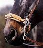nose and under the chin. The mechanical hackamore acts somewhat like a curb bit. Some add a noseband that is thick, soft and flat and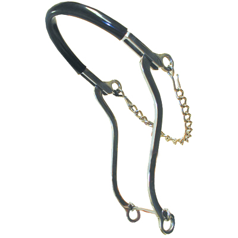 people think this will be more comfortable and easier on the horse. However, this is not the pain area; the chain under the chin is what causes the pain as it digs into the jaw bone and nerves. A mechanical hackamore can break the jaw of a horse in rough hands. As I have said before, any bit or training tool that causes pain is a "cheat" and shows a lack of understanding for the horse and a lack of horsemanship.
It is important to do some groundwork and make sure your horse knows how to give its head to the bosal. You can do this by walking your horse in a bosal, attach a lounge line and round corral him with the bosal. From the ground, teach him to flex left and right and give to the bosal. Reach over the horse, grab the reins on the other side and put slight pressure to see if you can get the horse to back up with the bosal. You will know when you horse is ready and understands it. Then you will teach him to move, stop and turn on a light rein.
About the worst time in the life of a young horse is when a bit is first placed in their mouth. Most horses are broken to saddle between 2 to 3 years. At that stage in their life, there is a lot going on in their mouths. A snaffle bit can do a lot of damage and set the course for many more problems to come. I suspect this set of events has ruined more horses than just about anything else.
Here is a good video about the negative affects of a bit.
One thing hackamore training does is never teaches a horse to brace ( the rider can teach this but should not). A hackamore cannot overpower a horse. A horse that has learned to brace himself cannot be lite on the bit. He cannot be a well balanced horse. He cannot collect himself and give to the bit. I have just described a horse than not only will not gait, he will not perform at anything well. I will even go further and say this is not a safe horse.
There is an old vaquero saying, "If a horse is not safe, you are stealing rides". Hackamore training is especially beneficial for an aged horse. Because you are not in their mouths anymore, you do not have to deal with that baggage. You start with a fresh horse and a fresh attitude. What is so interesting about the hackamore training system is that it incorporates the principles of natural horsemanship and dressage. Just think, the hackamore has been on this continent for about 300 hundred years. This is not a new idea!
Most horsemen and horses like the hackamore because the horse can easily eat and drink. And of course, any horse likes not having metal in his mouth.
I have attached a copy of a question and answer about using a bosal verses a snaffle bit.
Question: Hi Rick, your site is very informative, thanks. I always here that a snaffle bit is the mildest and best training bit out there. Almost everyone I know uses a snaffle bit. What is the difference between a bosal and snaffle and why do you prefer a bosal? How do you use the two differently?
Answer:Metal bits in the mouth = Less Horsemanship, more pain, and a lack of partnership between horse and rider.
Hi Tom, great question and I can tell you are thinking like a horse. If you were a horse, you would want a bosal and not a piece of metal in your mouth. A bosal takes more time, softer hands and requires more communication from the rider. I like the bosal because I know if I was a horse, I would rather be in a halter or bosal, than have a piece of metal in my mouth, stopping me from eating, hitting my teeth and pulling on my sensitive lips.
Many people are not secure enough in their riding skills and think they cannot handle or stop a horse in a bosal. Therefore, it is easier to use a bit (a cheat) where they think they can force or make the horse listen by pain. This is not a good philosophy, especially for the horse. Not to mention it will not work. If a horse is scared enough or is in pain enough, he will jump off a cliff, run through barbed wire, run through a fence, bust down a door or whatever else, he thinks he has to do, to survive. I don't care how big of a bit you have, if a bear walks out onto the same trial you and your horse are on, hang on because you are going for a ride. When a horse survival skills kick in, your only hope to control him is your ability to clam him down, bring him back to you, control his mind and make him feel safe period. Pain rarely makes a horse feel safe! Bits = Pain, especially when both rider and horse get scared and or nervous.
You use a bosal and snaffle about the same way, except I believe that a bosal sends better cues and a clearer signal to the horse than a snaffle, it is kinder than a snaffle and requires more finesse than a snaffle. A snaffle and bosal are direct reining bridles. A bosal is a bitless bridle and a snaffle is a bit bridle.
Direct reining, sometimes called plow reining, is when you use one rein at a time to communicate to the horse. If I want to go left, you use the left rein. Inexperience riders think that when you use the rein you are pulling the horse, the rein is the cue, and the horse comes to the rein. In fact, the horse is moving away from pressure on the opposite side of the rein and that is what is causing him to come to the rein.
If you pull on the left rein of a snaffle, the horse feels pressure on the right side of his face, as if someone was on the right pushing his head to the left. Therefore, when you teach a horse to move his head left, you should be pulling more left than back. Most people pull back, this sends poor cues to the horse and confuses him. Most people, like horses will take the easy way if given a choice. For a rider, it is easier to pulls back on the left rein than it is to lean forward, slide their left hand way out to the side, so the horse can see it and slightly suggest the horse come left. So what do riders do, they sit comfortable and pull left and the horse gets pulled out of position, gets multiple conflicting cues and tries to do something.
Later when the horse learns how to read you body cue, with the rein cue, he will get more responsive and you will have to do less and less. Then you can start using an indirect reining method. If you are paying attention and doing it right you will be laying your opposite rein on the horse's neck when giving the direct rein cue. So later, when you lay the rein on the neck, the horse will know that you want him to move away and go the opposite way and soon you will not have to direct rein anymore. However, you must know how to direct rein properly, so when and if your horse needs some fine tuning you will know how to go back and fix it.
A bosal is more forgiving and uses less pain. To get a horse to do some things you have to make him feel uncomfortable. Not hurt him or cause him pain, just uncomfortable. Therefore, when you move the rein on a bosal, the horse feels it. It does not hurt him and he does not fear it, so he thinks, responds, and does not react as he does to pain. We want horses to respond not react.
So, besides the fact that my horse, my buddy and my partner likes the bosal better, and the fact that the bosal is more forgiving of my mistakes, and causes less pain to my horse, the questions is, why would I use anything else?
Many people stick with a snaffle because it is easier, faster and they think it gives them more control. Most trainers use snaffle bits because it is faster. In a trainer's mind, why would I want to spend more time on a horse than I have to? Why would I use a bosal which takes longer and requires more time? Why do I worry about hurting the horse a little, if it is not my horse? And, if the owner is sending this horse for training they don't understand a horse anyway, so why waste the time on a bosal?
No, I am not cracking on any specific trainer, but think about it. I know many "so called" trainers that have a philosophy of: If I train a horse too good and too fast, I make less money and they won't come back. I actually know one guy (we will call him Tom) that trains horses and told me the reason he uses spurs to train other people's horses is that most people don't use spurs or don't know how to use them. So the horse won't listen to the owner after a while and they will have to bring the horse back to him, for more training. In addition to my disbelief, it works. I see a lot, mostly woman, keep bringing him back their horse for more and more training. If I talk to these people they say, I know it cost a lot of money, but look how good my horse does when "Tom" rides him. Trainers such as this are crooks and predators. They take advantage of poor unsuspecting horse owners (which there is no shortage of), he uses them, and horses, to rip people off, gets people hurt to make money. Just because someone says, they are a trainer and they can get your horse to work good FOR THEM, does not make them an ethical person, a good trainer or a friend of the horse.
Here are some tips for picking trainers; Beware of trainers that will not provide a specific schedule for working your horse. You should be encouraged to attend all training sessions with your horse. You absolutely should schedule training so you can attend all training sessions with your horse. Trainers abuse more horses than anyone else. Some trainers get short, frustrated, in a hurry and angry at horses, especially ones that are not theirs and they know they will not have to ride or deal with the horse for very long. Pain and fear gets faster results. Get specifics of what your horse will be able to do after training. Like in 30 days your horse will be able to move off the leg and you will be able to walk, trot, canter and control the horse's downward transitions, his hindquarters and front-end. Your horse will not buck and will allow you to saddle him with no resistance. You should tell your trainer that you do not want any other bits used on your horse, other than the one you provide (a bosal would be better than a bit) and you DO NOT want spurs worn or used while training your horse. Slick trainers will tell you, I wear spurs but I don't use them. BS, if you don't use them, then why the hell are you wearing them? If you pay for training, you decide how and when your horse is trained. You would not send you kid off to some school without knowing anything about the school and without making sure your child is safe and well cared for, but horse people do this all the time with their horse. In my opinion, a good trainer will not want to train a horse without the owner present. Nothing keeps people more honest than witnesses. Those who have nothing to hide -- hide nothing. If you do not know how your horse is trained, what cues are used, and how to get your horse to respect and listen to you, then you are throwing away your money. I can ride or train most any horse. So how does it help you, if I can ride your horse and make him listen to me? It doesn't help you one bit. So why do people continue to send their horse away for training and expect to be able to ride the horse just because it was sent to a trainer?
So back to the bosal, if I were to train your horse, I would use a bosal and teach you how to use it properly. I would train you and your horse together. If a marriage is in trouble, only one party goes, and gets help (training) will the marriage be fixed. No, if both people are not involved and both don't understand the rules and have the same foundation, then the partnership will not work. Sending your horse to training will not make you a better rider or horse person.
I hope you decide to use a bosal and get rid of bits forever. This will help you, your horse and will improve your partnership.
Good luck on your training.